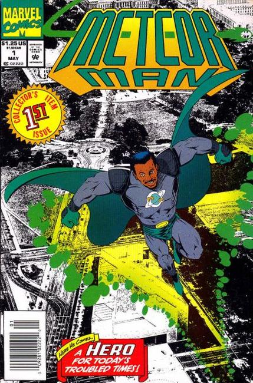

The Meteor Man is a 1993 American superhero comedy film written by, directed by, co-produced by and starring Robert Townsend with supporting roles by Marla Gibbs, Eddie Griffin, Robert Guillaume, James Earl Jones, Bill Cosby, and Another Bad Creation. The film also features special appearances by Luther Vandross, Sinbad, Naughty by Nature, Cypress Hill, and Big Daddy Kane. Townsend stars as a mild-mannered schoolteacher, who becomes a superhero after his neighborhood in Washington, D.C. is terrorized by street gangs.

Series: 6 issues 1993
Publisher: Marvel
"By The Time I Get To Arizona...," script by Dwight D. Coye and Bertram B. Hubbard, pencils by Robert Walker, inks by Jon Holdredge; Jefferson Reed, once the Meteor Man, now partially de-powered travels to Arizona with his friend Mike Anderson to find a meteor and restore his powers but Mr. Skyy and his associates have the same agenda.